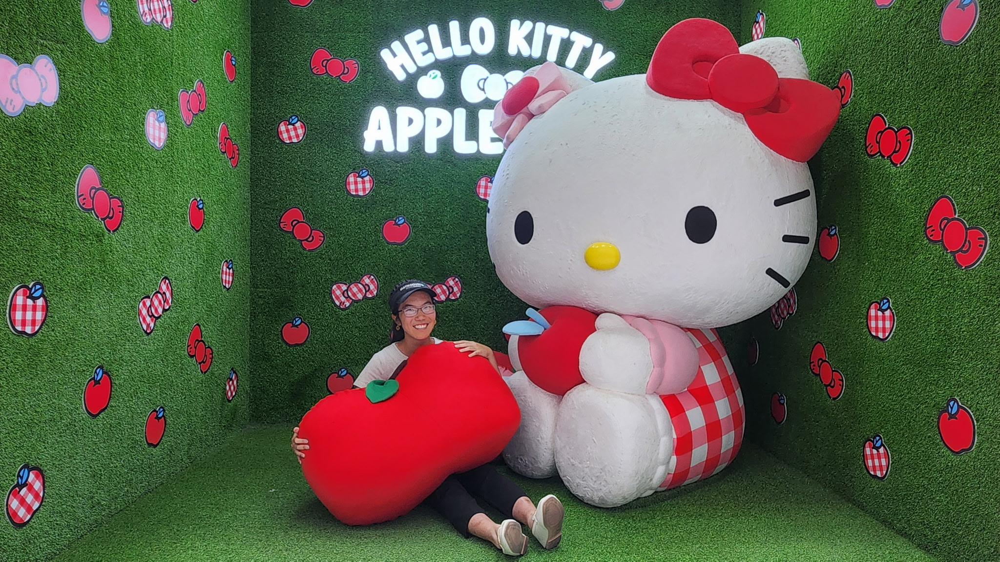
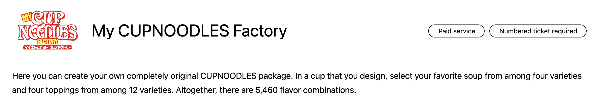
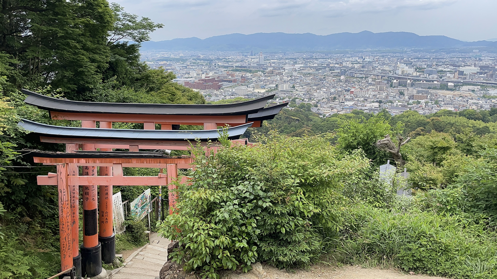
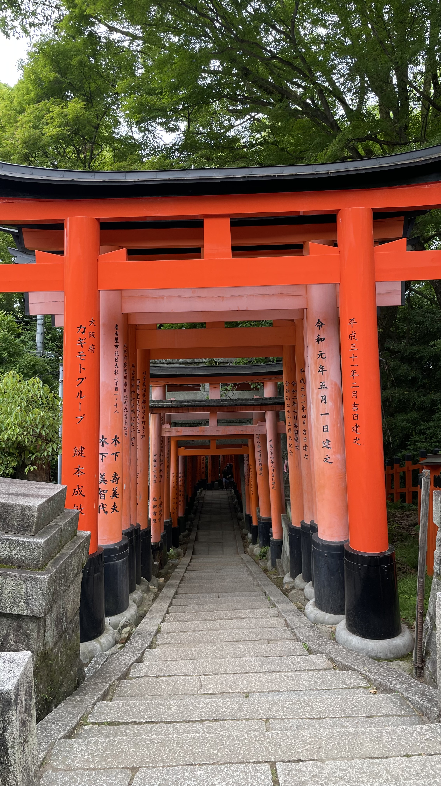
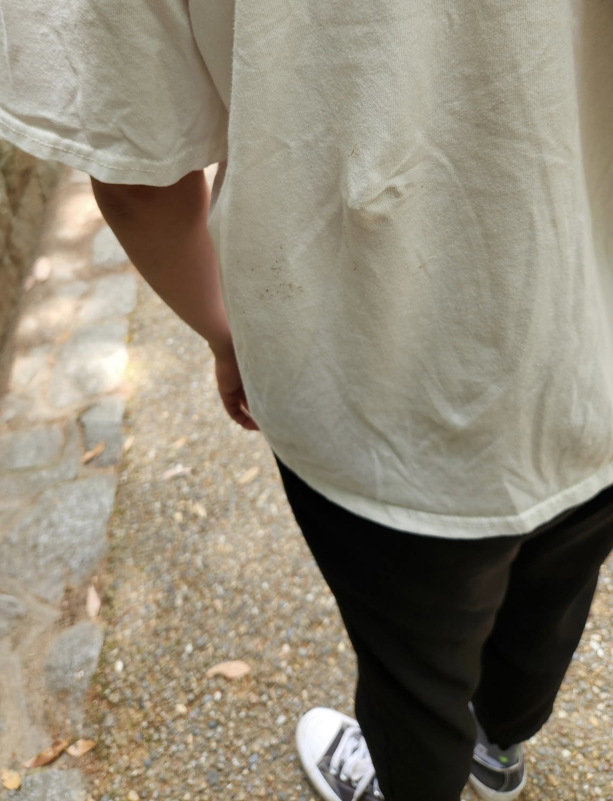
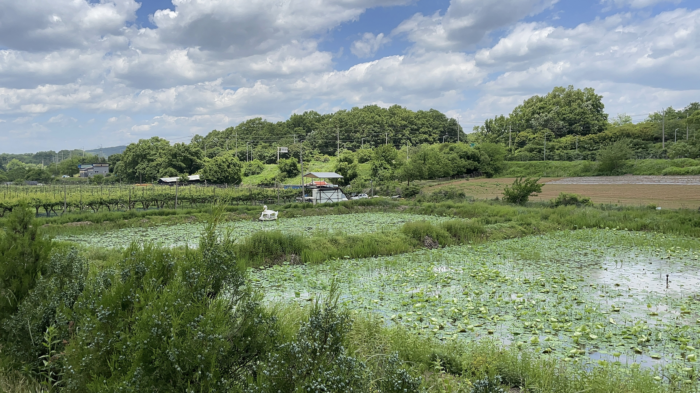

Japan & South Korea
June 18, 2025
It’s been a while since I did a travel post! Well, not if you count the previous one around a month ago, but it has certainly been a while since I toured a country outside the United States! We went to Japan and South Korea, and generally had a great time at both.
Since we visited a high concentration of places, I’ll provide a top ten list of places that I thought were unique, beautiful, moving, or a combination of all three, because as many times as I say “top ten [something]” to my friends randomly, I have yet to create an actual list of top tens.
So in no particular order…
10. Tokyo Metropolitan Government Building
This spot was one of the first places we visited. I think it’s pretty vanilla, except it earns a spot because I think this was one of the best bird’s eye views. There were a lot of other tall buildings around, and they each
9. Hello Kitty Cafe
We were visiting Myeongdong shopping street, which is well-known for their night markets. The streets are filled with street food vendors, all inviting you in to try. Realistically, you can really only choose one or two places to go to, because their portions are large.
A little off this street is a Hello Kitty Cafe. Honestly, this place earned a spot only because I thought it was extremely funny and unique. Never in my life did I expect to see this, even as a young Hello Kitty enthusiast.
Posing next to a massive Hello Kitty.
The whole time I was there, I was internally screaming, “This cannot be a real place.” It reminded me of the Hello Kitty figurines I played with as a kid, which included a book of scenes to set the figurines in. I thought the interior of the cafe upheld the aesthetic very well. The food upheld the aesthetic well too—I’m sure they had a mold, but the apple, mango, and peach desserts looked somewhat akin to the real fruit. The Hello Kitty mousse was done very well too, though I’m not sure how it felt to eat her face.
I’m guessing this is some tourist destination too, because there was almost always a waiting list. The taste of the food was mid to me, but the experience was funny.
8. Cup Noodles Museum

While it took a lot of walking in the rain and cold to get here, the experience was worth it! A ticket gets you a cup that you get to design yourself along with noodles, soup flavoring, and toppings. It feels a little silly to say I went to the Cup Noodles Museum and really liked it, but perhaps less silly than saying I went to the Hello Kitty Cafe and really liked it given I’m technically an adult. But hey, who says I still can’t enjoy silly things?
Their website confuses me though, because I don’t know what they did with their math. If there are four varieties of soup, that gives 4, which should be multiplied by
7. Fushimi Inari Taisha
I have never seen so many gates in one place. If I had a nickel for every gate I saw, I’d maybe have around forty dollars, which is a pretty decent amount of dollars. Also weird that it happened hundreds of times.
We climbed Mount Inari, which was quite treacherous. We had all sorts of different sources telling us different amounts of time to climb the thing, so I don’t know how long it actually took. When we got to the top, there was… pretty much nothing, so I had to rely on a sense of pride of “I did it!!!” to feel like we didn’t just waste a bunch of time.
It wasn’t an easy climb though, and I am actually pretty happy with having made it to the top.
6. Hakone


A lot of the places we went to were a formula of water + greenery + element of uniqueness, such as a bright red-orange gate. For some reason, the combination in Hakone was extra nice to me. Also, they had volcanoes, which were especially interesting. I envisioned red, hot lava, but it was just a bunch of sulfur. It was still unique though.
5. Nara

Nara has so many deer. Apparently, there are around 1,300, and we really only saw a fraction of that number.
They are generally nonchalant, but only if you don’t have food. The moment you buy deer crackers though… suddenly, they are extremely chalant. We got some, and they immediately chased me down. One even bit me, tugged at my shirt, and left a mark.
The evidence 💔
If you’re calm, they’re relatively calm but will still bite. If you’re not calm and running around though, they will chase you down. A lot of people lost their crackers because proving they had no crackers left was the only way to calm down the deer.
At some point, there was a stampede of a couple dozen deer sprinting in the same direction. I still don’t know what happened, but I’m guessing maybe one of the deer cracker stations had an accident, and the deer weren’t going to miss that opportunity.
4. Himeji Park


Looks-wise, Himeji Park was definitely near the top. The weather was amazing too. Something about the ratio of water to greenery to castle itched my brain just right. Also, we could climb the floors of the castle, which got a really good view of Himeji.
Something interesting is that we had to take off our shoes before entering the upper floors of the castle, which seemed to happen at some of the other temples we went to. At this particular castle though, the stairs were really steep and made of wood, which made them slippery. I can’t imagine people back then needing to navigate these stairs all the time.
3. Korean Demilitarized Zone
We went around with a tour guide because it’s hard to get here on your own. Suffice it to say… it was interesting. There was a lot of history involving the Korean War, but I also learned about how Japan colonized South Korea for quite some time.
This place was moving because it’s so unfortunate to see how there will always—at least seemingly—be a cut, whether that be in ideology or a literal border. It will take a lot of healing from both sides to unify, but the time to do that is not anywhere near the future. It’s also sad to see the continued suffering through the brainwashing and the painful stories, the lost families and broken trust. I don't think I will ever fully understand why some people inherently have a lack of empathy, but maybe that's a lack of empathy on my part.
2. Hiroshima
Hiroshima was probably where I had the most moving emotional experience. I was also in a meh mental space, but discounting that, walking around this space just felt so… odd. When we got to the Atomic Bomb Dome, there were workers trimming down the bushes. Somehow, that felt worse than silence, because the noise reminded me of the stories we don’t know about out of masking. How our lives continue, but we don't seem to learn from atrocities that have occurred before.
As we were walking around, I gradually felt worse, because I felt sorry for everyone who was involved, especially the ones who continue to be involved because they cannot run away from history. I remember observing a group of boys, laughing with each other, and I wonder if they’re really okay, or if anyone really is. I remember the Peace Clock Tower too, and how it is always time to love each other, but there is also not enough time to. I think of all the wars going on in the world, and how they all stem from some sort of lack of ability to be empathetic to the other party involved. I wonder if we're doomed to fail, because are we inherently born with love or hate?
I soloed the Peace Memorial Museum, and somehow, seeing the evidence didn’t feel as bad as walking around imagining it. I think I fear the unknown more than anything else, because how bad can it get? I don’t know. But seeing the disturbing images and ruins cements that it can be this terrible. It sets a bar, one that surely, surely, we cannot pass lower (we can).
But then what? The thing about grief is that… it must eventually stop. The best thing we can do with our mistakes is to acknowledge them, honor the ones who were lost, and move forward.
1. Izo-Kogen


I wanted to end on a somewhat higher note, so here it is!
We visited earlier on, and it was quite a bit of trouble to get here since it was somewhat remote. However, upon seeing the Jogasaki Coast, I was in awe. Pictures do not do this place justice at all. The water was this beautiful cerulean color, and it was so peaceful. The weather also happened to be really good.
The two suspension bridges here were also stunning. Everything here was stunning. I think the next best thing to seeing it in-person is through video, so I'll be making a vlog at some point.
Funny Statistics
21 days of travel
4 plane flights
18,837 steps a day on average (highest being 28,915)
1 Hello Kitty Shinkansen spotted
2 allergic reactions
0 bad dishes (except for maybe the ones that caused an allergic reaction)
The Shenanigans (and other general comments)
So about the two allergic reactions, I don’t know exactly how those happened. The first time was around after we visited Yokohama Chinatown, and I’m guessing I have some sort of MSG intolerance issue, because I’ve had this happen one other time. The second time was after landing in Narita the second time, and I’m guessing there was a lot of MSG in the omurice I ate because I remember thinking I could have some sort of reaction to it later. The second was a lot worse and was a 0/10 experience, but whatever.
I didn’t have any major issues other than that, but if you have dietary restrictions or are vegetarian/vegan/something else, it might be a bit harder in Japan than South Korea. For Japan, the issue we ran into the most was lack of greens. Japan apparently does not have a lot of land available for agriculture because of their geography. Shortage of farmland is a huge issue because the population there is extremely dense. Whenever we went to a convenience store, we didn’t really see vegetables—even fruits were limited. There were a lot of pickled vegetables, but if you have some sort of acid reflux issue, that’s not great. Unfortunately, one of us cannot have meat and has some acid reflux issues, so that proved to be difficult. There are options, but they’re very limited.
But back to the convenience stores. There are a ridiculous number of them in Japan. Same thing with vending machines! Those were very enjoyable.
Also, things were generally really cheap in Japan and South Korea. This is probably because yen and won, Japanese and South Korean currency (respectively) are extremely depreciated in comparison to USD. We could get a lot of decent quality items at a crazy good price.
The public transportation here was also really good. I'm always amazed by good (or existing) public transportation, because the public transportation where I'm from is embarrassing. Japan was better than South Korea I think, because they have a railway system that actually reaches most places. They also have Shinkansens, which are especially impressive, even though they are double the cost of a regular train. Not to say South Korea’s public transportation is bad by any means—they actually have buses! trams! subways! that people use!—but it was a little harder to get around.
The culture was also really interesting. People were generally pretty friendly except in popular spots, but I would argue that it’s the tourists (like us) who are annoying, not the people who actually live there. Even though we couldn’t speak Japanese or Korean, we could get around pretty easily because there were signs with English. Well… South Korea was a bit more of a struggle sometimes, because Google Maps does not provide walking directions for some reason. The map works just fine, but it doesn’t provide the route to take to get to a place. That was mildly annoying, but thankfully, I am somewhat decent at finding things geographically, so we were usually fine.
In Japan, people are very rule-abiding. I did like this aspect a lot, but it’s not for everyone. I like it because there is order in getting to places and efficiency in getting things done. There are other perks to rule-abidingness: there was very little litter on the streets, for example. Also, we barely saw any homeless people. However, I would argue that uh…
I also noticed people kind of dress the same there. Basically, if someone wasn’t wearing a blue suit or some sort of office wear, it was either because they were 1. old and probably retired, 2. a tourist. I don't really know why, but homogeneity seems to be encouraged, which has its pros and cons.
In general though, we had a really good experience! I would recommend visiting both countries at some point just to experience a different side of life.
✩₊˚.⋆☾⋆⁺₊✧
That is all, consider subscribing or